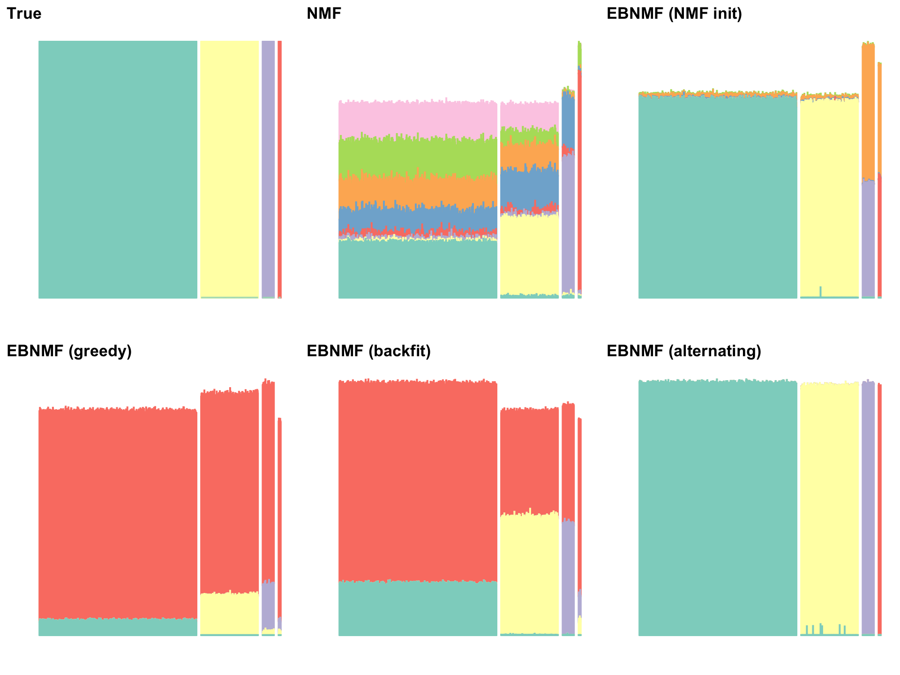

Last updated: 2025-08-12
Checks: 6 1
Knit directory: ebnmf-paper/
This reproducible R Markdown analysis was created with workflowr (version 1.7.1). The Checks tab describes the reproducibility checks that were applied when the results were created. The Past versions tab lists the development history.
The R Markdown file has staged changes. To know which version of the
R Markdown file created these results, you’ll want to first commit it to
the Git repo. If you’re still working on the analysis, you can ignore
this warning. When you’re finished, you can run
wflow_publish to commit the R Markdown file and build the
HTML.
Great job! The global environment was empty. Objects defined in the global environment can affect the analysis in your R Markdown file in unknown ways. For reproduciblity it’s best to always run the code in an empty environment.
The command set.seed(20231214) was run prior to running
the code in the R Markdown file. Setting a seed ensures that any results
that rely on randomness, e.g. subsampling or permutations, are
reproducible.
Great job! Recording the operating system, R version, and package versions is critical for reproducibility.
Nice! There were no cached chunks for this analysis, so you can be confident that you successfully produced the results during this run.
Great job! Using relative paths to the files within your workflowr project makes it easier to run your code on other machines.
Great! You are using Git for version control. Tracking code development and connecting the code version to the results is critical for reproducibility.
The results in this page were generated with repository version a17d689. See the Past versions tab to see a history of the changes made to the R Markdown and HTML files.
Note that you need to be careful to ensure that all relevant files for
the analysis have been committed to Git prior to generating the results
(you can use wflow_publish or
wflow_git_commit). workflowr only checks the R Markdown
file, but you know if there are other scripts or data files that it
depends on. Below is the status of the Git repository when the results
were generated:
Ignored files:
Ignored: .DS_Store
Ignored: .Rhistory
Ignored: .Rproj.user/
Ignored: analysis/lps_fail_fix_cache/
Untracked files:
Untracked: analysis/simdata3.Rmd
Untracked: analysis/simdata6.Rmd
Untracked: matlab/simdata3.m
Untracked: matlab/simdata3.mat
Untracked: matlab/simdata3_nmf_sW=0.5.mat
Untracked: matlab/simdata3_nmf_sW=0.6.mat
Untracked: matlab/simdata3_nmf_vanilla.mat
Untracked: matlab/simdata_scenario1.m
Untracked: matlab/simdata_scenario1.mat
Untracked: matlab/simdata_scenario1_k=4_sW=
Untracked: matlab/simdata_scenario1_k=4_sW=0.1.mat
Untracked: matlab/simdata_scenario1_k=4_sW=0.2.mat
Untracked: matlab/simdata_scenario1_k=4_sW=0.3.mat
Untracked: matlab/simdata_scenario1_k=4_sW=0.4.mat
Untracked: matlab/simdata_scenario1_k=4_sW=0.5.mat
Untracked: matlab/simdata_scenario1_k=4_sW=0.6.mat
Untracked: matlab/simdata_scenario1_k=4_sW=0.7.mat
Untracked: matlab/simdata_scenario1_k=4_sW=0.8.mat
Untracked: matlab/simdata_scenario1_k=4_sW=0.9.mat
Untracked: matlab/simdata_scenario1_k=8_sW=
Untracked: matlab/simdata_scenario1_k=8_sW=0.1.mat
Untracked: matlab/simdata_scenario1_k=8_sW=0.2.mat
Untracked: matlab/simdata_scenario1_k=8_sW=0.3.mat
Untracked: matlab/simdata_scenario1_k=8_sW=0.4.mat
Untracked: matlab/simdata_scenario1_k=8_sW=0.5.mat
Untracked: matlab/simdata_scenario1_k=8_sW=0.6.mat
Untracked: matlab/simdata_scenario1_k=8_sW=0.7.mat
Untracked: matlab/simdata_scenario1_k=8_sW=0.8.mat
Untracked: matlab/simdata_scenario1_k=8_sW=0.9.mat
Untracked: matlab/simdata_scenario1_nmf_k=4.mat
Untracked: matlab/simdata_scenario1_nmf_k=4_sW=0.5.mat
Untracked: matlab/simdata_scenario1_nmf_k=8.mat
Untracked: matlab/simdata_scenario1_nmf_sW=0.3.mat
Untracked: matlab/simdata_scenario1_nmf_sW=0.4.mat
Untracked: matlab/simdata_scenario1_nmf_sW=0.5.mat
Untracked: matlab/simdata_scenario1_nmf_sW=0.6.mat
Untracked: matlab/simdata_scenario1_nmf_sW=0.8.mat
Untracked: matlab/simdata_scenario1_nmf_vanilla.mat
Untracked: matlab/simdata_scenario2.asv
Untracked: matlab/simdata_scenario2.m
Untracked: matlab/simdata_scenario2.mat
Untracked: matlab/simdata_scenario2_k=3_sW=0.1.mat
Untracked: matlab/simdata_scenario2_k=3_sW=0.2.mat
Untracked: matlab/simdata_scenario2_k=3_sW=0.3.mat
Untracked: matlab/simdata_scenario2_k=3_sW=0.4.mat
Untracked: matlab/simdata_scenario2_k=3_sW=0.5.mat
Untracked: matlab/simdata_scenario2_k=3_sW=0.6.mat
Untracked: matlab/simdata_scenario2_k=3_sW=0.7.mat
Untracked: matlab/simdata_scenario2_k=3_sW=0.8.mat
Untracked: matlab/simdata_scenario2_k=3_sW=0.9.mat
Untracked: matlab/simdata_scenario2_k=8_sW=0.1.mat
Untracked: matlab/simdata_scenario2_k=8_sW=0.2.mat
Untracked: matlab/simdata_scenario2_k=8_sW=0.3.mat
Untracked: matlab/simdata_scenario2_k=8_sW=0.4.mat
Untracked: matlab/simdata_scenario2_k=8_sW=0.5.mat
Untracked: matlab/simdata_scenario2_k=8_sW=0.6.mat
Untracked: matlab/simdata_scenario2_k=8_sW=0.7.mat
Untracked: matlab/simdata_scenario2_k=8_sW=0.8.mat
Untracked: matlab/simdata_scenario2_k=8_sW=0.9.mat
Untracked: matlab/simdata_scenario2_nmf_k=6.mat
Untracked: matlab/simdata_scenario2_nmf_sW=0.2.mat
Untracked: matlab/simdata_scenario2_nmf_sW=0.3.mat
Untracked: matlab/simdata_scenario2_nmf_sW=0.4.mat
Untracked: matlab/simdata_scenario2_nmf_sW=0.5.mat
Untracked: matlab/simdata_scenario2_nmf_sW=0.6.mat
Untracked: matlab/simdata_scenario2_nmf_vanilla.mat
Untracked: matlab/simdata_scenario3.mat
Untracked: matlab/simdata_scenario3_k=12_sW=0.1.mat
Untracked: matlab/simdata_scenario3_k=12_sW=0.2.mat
Untracked: matlab/simdata_scenario3_k=12_sW=0.3.mat
Untracked: matlab/simdata_scenario3_k=12_sW=0.4.mat
Untracked: matlab/simdata_scenario3_k=12_sW=0.5.mat
Untracked: matlab/simdata_scenario3_k=12_sW=0.6.mat
Untracked: matlab/simdata_scenario3_k=12_sW=0.7.mat
Untracked: matlab/simdata_scenario3_k=12_sW=0.8.mat
Untracked: matlab/simdata_scenario3_k=12_sW=0.9.mat
Untracked: matlab/simdata_scenario3_k=7_sW=0.1.mat
Untracked: matlab/simdata_scenario3_k=7_sW=0.2.mat
Untracked: matlab/simdata_scenario3_k=7_sW=0.3.mat
Untracked: matlab/simdata_scenario3_k=7_sW=0.4.mat
Untracked: matlab/simdata_scenario3_k=7_sW=0.5.mat
Untracked: matlab/simdata_scenario3_k=7_sW=0.6.mat
Untracked: matlab/simdata_scenario3_k=7_sW=0.7.mat
Untracked: matlab/simdata_scenario3_k=7_sW=0.8.mat
Untracked: matlab/simdata_scenario3_k=7_sW=0.9.mat
Unstaged changes:
Modified: analysis/simdata2.Rmd
Modified: analysis/simdata5.Rmd
Modified: analysis/simdata7.Rmd
Modified: matlab/simdata2.mat
Staged changes:
New: analysis/simulations.Rmd
Note that any generated files, e.g. HTML, png, CSS, etc., are not included in this status report because it is ok for generated content to have uncommitted changes.
There are no past versions. Publish this analysis with
wflow_publish() to start tracking its development.
First, load the packages and some custom functions needed for the analyses below.
library(R.matlab)
library(tibble)
library(dplyr)
library(tidyr)
library(ggplot2)
library(cowplot)
library(ebnm)
library(flashier)
library(fastTopics)
source("code/swimmer_functions.R")We will simulate three scenarios.
Plotting functions:
align_cols <- function(plotmat, refmat) {
if (ncol(refmat) > ncol(plotmat)) {
refmat <- refmat[, 1:ncol(plotmat)]
}
idx <- rep(NA, ncol(plotmat))
cor_mat <- cor(plotmat, refmat)
cor_which <- apply(cor_mat, 1, which.max)
all_k <- rev(order(apply(cor_mat, 1, max)))
for (k in all_k) {
next_idx <- cor_which[k]
if (is.na(idx[next_idx])) {
idx[next_idx] <- k
}
}
idx[which(is.na(idx))] <- setdiff(1:ncol(plotmat), idx)
return(idx)
}
do_structure_plot <- function(LL, kset, title) {
structure_plot(LL[, kset], grouping = L_grps, gap = 20,
topics = rev(1:ncol(LL)), loadings_order = 1:sum(ns),
colors = RColorBrewer::brewer.pal(12, "Set3")) +
labs(y = "") +
ggtitle(title) +
guides(fill = "none", color = "none") +
theme(axis.text.x = element_blank()) +
theme(axis.text.y = element_blank()) +
theme(plot.title.position = "plot")
}
plot_fl <- function(fl, refmat, title) {
LDF <- ldf(fl, type = "f")
LL <- t(t(LDF$L) * LDF$D)
kset <- align_cols(LL, refmat)
do_structure_plot(LL, kset, title)
}
plot_nmf <- function(res, refmat, title) {
Wscale <- sqrt(apply(res$W, 2, function(x) sum(x^2)))
Hscale <- sqrt(apply(res$H, 1, function(x) sum(x^2)))
D <- Wscale * Hscale
LL <- t(t(res$W) / sqrt(Wscale) * sqrt(Hscale))
kset <- align_cols(LL, refmat)
do_structure_plot(LL, kset, title)
}Fitting functions:
run_nmf <- function(Y, k, ntrials = 10) {
best_mse <- Inf
for (i in 1:ntrials) {
set.seed(i)
next_res <- NNLM::nnmf(Y, k = k)
if (min(next_res$mse) < best_mse) {
best_mse <- min(next_res$mse)
best_res <- next_res
}
return(best_res)
}
}
run_ebnmf_from_nmf <- function(Y, nmf_res, var_type, maxiter = 2000) {
flash_init(Y, var_type = var_type) |>
flash_factors_init(list(nmf_res$W, t(nmf_res$H)), ebnm_fn = ebnm_point_exponential) |>
flash_backfit(maxiter = maxiter) |>
flash_nullcheck()
}
run_greedy <- function(Y, Kmax, var_type = 2) {
set.seed(1)
flash(Y, var_type = var_type, greedy_Kmax = Kmax, ebnm_fn = ebnm_point_exponential)
}
run_greedy_backfit <- function(Y, Kmax, var_type = 2) {
run_greedy(Y, Kmax, var_type = var_type) |>
flash_backfit() |>
flash_nullcheck()
}
run_alternating_gb <- function(Y, Kmax, var_type = 2) {
fl <- flash_init(Y, var_type = var_type) |>
flash_set_verbose()
keep_going <- TRUE
while(keep_going) {
current_n <- fl$n_factors
fl <- fl |>
flash_greedy(ebnm_fn = ebnm_point_exponential) |>
flash_backfit(maxiter = 10)
if (fl$n_factors == current_n | fl$n_factors == Kmax) {
keep_going <- FALSE
}
}
fl <- fl |>
flash_backfit() |>
flash_nullcheck()
return(fl)
}ns <- c(690, 250, 50, 10)
p <- 500
k <- 4
# Loadings (document-topics):
L <- matrix(0, nrow = sum(ns), ncol = k)
L[, 1] <- c(rep(1, ns[1]), rep(0, sum(ns[2:4])))
L[, 2] <- c(rep(0, ns[1]), rep(1, ns[2]), rep(0, sum(ns[3:4])))
L[, 3] <- c(rep(0, sum(ns[1:2])), rep(1, ns[3]), rep(0, ns[4]))
L[, 4] <- c(rep(0, sum(ns[1:3])), rep(1, ns[4]))
# Topics should be similar in magnitude:
set.seed(1)
F <- matrix(rnorm(p * 4, mean = 50, sd = 10), nrow = p, ncol = 4)
# Anchor words
n_word_anchors <- 10
for (i in 1:k) {
F[((i - 1) * n_word_anchors + 1):(i * n_word_anchors), setdiff(1:k, i)] <- 0
}
mu <- L %*% t(F)
Y <- matrix(rpois(sum(ns) * p, mu), nrow = sum(ns), ncol = p)
# Make sure there aren't any all-zero columns:
F <- F[apply(Y, 2, sum) > 0, ]
Y <- Y[, apply(Y, 2, sum) > 0]
rownames(Y) <- paste0("sample", 1:nrow(Y))
colnames(Y) <- paste0("feature", 1:ncol(Y))
L_grps <- rep(LETTERS[1:length(ns)], times = ns)
writeMat("matlab/simdata_scenario1.mat", Y = matrix(as.double(Y), nrow = sum(ns), ncol = p))The “true” loadings matrix \(L\) appears as follows:
k4_plots <- list()
k4_plots[[1]] <- do_structure_plot(L, 1:4, "True")
k4_plots[[1]]Do fits:
NMF and EBNMF, K = 4:
plot_grid(plotlist = k4_plots, nrow = 2, ncol = 3)Compare ELBOs:
c(ebnmf_res_nmf_init_k4$elbo, ebnmf_res_gb_k4$elbo, ebnmf_res_alternating_k4$elbo)
# [1] -1684790 -1695109 -1684788Sparse NMF, K = 4:
sparse_nmf_k4_plots <- list()
for (i in 1:9) {
sparse_nmf <- readMat(paste0("matlab/simdata_scenario1_k=4_sW=0.", i, ".mat"))
sparse_nmf_k4_plots[[i]] <- plot_nmf(sparse_nmf, L, paste0("SpNMF (sW = 0.", i, ")"))
}
plot_grid(plotlist = sparse_nmf_k4_plots, nrow = 3, ncol = 3)NMF and EBNMF, K = 8:
plot_grid(plotlist = k8_plots, nrow = 2, ncol = 3)
Compare ELBOs:
c(ebnmf_res_nmf_init_k8$elbo, ebnmf_res_gb_k8$elbo, ebnmf_res_alternating_k8$elbo)
# [1] -1686787 -1695109 -1684788Sparse NMF, K = 8:
sparse_nmf_k8_plots <- list()
for (i in 1:9) {
sparse_nmf <- readMat(paste0("matlab/simdata_scenario1_k=8_sW=0.", i, ".mat"))
sparse_nmf_k8_plots[[i]] <- plot_nmf(sparse_nmf, L, paste0("SpNMF (sW = 0.", i, ")"))
}
plot_grid(plotlist = sparse_nmf_k8_plots, nrow = 3, ncol = 3)ns <- c(rep(250, 4), rep(20, 7))
p <- 500
k <- 7
# Loadings (document-topics):
L <- matrix(0, nrow = sum(ns), ncol = k)
L[, 7] <- c(rep(1/3, sum(ns[1:4])), rep(1, ns[5]), rep(0, sum(ns[6:11]))) # root
L[, 5] <- c(rep(1/3, sum(ns[1:2])), rep(0, sum(ns[3:5])), rep(1, ns[6]), rep(0, sum(ns[7:11]))) # branch 1
L[, 6] <- c(rep(0, sum(ns[1:2])), rep(1/3, sum(ns[3:4])), rep(0, sum(ns[5:6])), rep(1, ns[7]), rep(0, sum(ns[8:11]))) # branch 2
L[, 1] <- c(rep(1/3, ns[1]), rep(0, sum(ns[2:7])), rep(1, ns[8]), rep(0, sum(ns[9:11]))) # leaf 1
L[, 2] <- c(rep(0, ns[1]), rep(1/3, ns[2]), rep(0, sum(ns[3:8])), rep(1, ns[9]), rep(0, sum(ns[10:11]))) # leaf 2
L[, 3] <- c(rep(0, sum(ns[1:2])), rep(1/3, ns[3]), rep(0, sum(ns[4:9])), rep(1, ns[10]), rep(0, ns[11])) # leaf 3
L[, 4] <- c(rep(0, sum(ns[1:3])), rep(1/3, ns[4]), rep(0, sum(ns[5:10])), rep(1, ns[11])) # leaf 4
set.seed(3)
F <- matrix(rgamma(p * k, shape = 0.4, rate = 0.4), nrow = p, ncol = k)
# Anchor words
n_word_anchors <- 10
for (i in 1:k) {
F[((i - 1) * n_word_anchors + 1):(i * n_word_anchors), setdiff(1:k, i)] <- 0
}
mu <- L %*% t(F)
X <- matrix(rpois(sum(ns) * p, lambda = expm1(mu)), nrow = sum(ns), ncol = p)
Y <- log1p(X)
# Make sure there aren't any all-zero columns:
F <- F[apply(Y, 2, sum) > 0, ]
Y <- Y[, apply(Y, 2, sum) > 0]
rownames(Y) <- paste0("sample", 1:nrow(Y))
colnames(Y) <- paste0("feature", 1:ncol(Y))
L_grps <- rep(LETTERS[1:length(ns)], times = ns)
writeMat("matlab/simdata_scenario3.mat", Y = matrix(as.double(Y), nrow = sum(ns), ncol = p))
# Warning in matrix(as.double(Y), nrow = sum(ns), ncol = p): data length [568860]
# is not a sub-multiple or multiple of the number of columns [500]The “true” loadings matrix \(L\) appears as follows:
k7_plots <- list()
k7_plots[[1]] <- do_structure_plot(L, 1:7, "\"True\"")
k7_plots[[1]]Do fits:
NMF and EBNMF, K = 7:
plot_grid(plotlist = k7_plots, nrow = 2, ncol = 4)Compare ELBOs:
c(ebnmf_res_nmf_init_k7_vartype0$elbo, ebnmf_res_gb_k7_vartype0$elbo, ebnmf_res_alternating_k7_vartype0$elbo)
# [1] -264968.5 -401794.5 -265547.9c(ebnmf_res_nmf_init_k7_vartype2$elbo, ebnmf_res_gb_k7_vartype2$elbo, ebnmf_res_alternating_k7_vartype2$elbo)
# [1] -187837.2 -187910.5 -188439.5Sparse NMF, K = 7:
sparse_nmf_k7_plots <- list()
for (i in 1:9) {
sparse_nmf <- readMat(paste0("matlab/simdata_scenario3_k=7_sW=0.", i, ".mat"))
sparse_nmf_k7_plots[[i]] <- plot_nmf(sparse_nmf, L, paste0("SpNMF (sW = 0.", i, ")"))
}
plot_grid(plotlist = sparse_nmf_k7_plots, nrow = 3, ncol = 3)NMF and EBNMF, K = 12:
plot_grid(plotlist = k12_plots, nrow = 2, ncol = 4)Compare ELBOs:
c(ebnmf_res_nmf_init_k12_vartype2$elbo, ebnmf_res_gb_k12_vartype2$elbo, ebnmf_res_alternating_k12_vartype2$elbo)
# [1] -156413.0 -187910.5 -168367.2Sparse NMF, K = 12:
sparse_nmf_k12_plots <- list()
for (i in 1:9) {
sparse_nmf <- readMat(paste0("matlab/simdata_scenario3_k=12_sW=0.", i, ".mat"))
sparse_nmf_k12_plots[[i]] <- plot_nmf(sparse_nmf, L, paste0("SpNMF (sW = 0.", i, ")"))
}
plot_grid(plotlist = sparse_nmf_k12_plots, nrow = 3, ncol = 3)
sessionInfo()
# R version 4.5.1 (2025-06-13)
# Platform: aarch64-apple-darwin20
# Running under: macOS Sequoia 15.5
#
# Matrix products: default
# BLAS: /Library/Frameworks/R.framework/Versions/4.5-arm64/Resources/lib/libRblas.0.dylib
# LAPACK: /Library/Frameworks/R.framework/Versions/4.5-arm64/Resources/lib/libRlapack.dylib; LAPACK version 3.12.1
#
# locale:
# [1] en_US.UTF-8/en_US.UTF-8/en_US.UTF-8/C/en_US.UTF-8/en_US.UTF-8
#
# time zone: America/New_York
# tzcode source: internal
#
# attached base packages:
# [1] stats graphics grDevices utils datasets methods base
#
# other attached packages:
# [1] fastTopics_0.6-192 flashier_1.0.56 ebnm_1.1-34 cowplot_1.2.0
# [5] ggplot2_3.5.2 tidyr_1.3.1 dplyr_1.1.4 tibble_3.3.0
# [9] R.matlab_3.7.0 workflowr_1.7.1
#
# loaded via a namespace (and not attached):
# [1] tidyselect_1.2.1 viridisLite_0.4.2 farver_2.1.2
# [4] R.utils_2.13.0 fastmap_1.2.0 lazyeval_0.2.2
# [7] promises_1.3.3 digest_0.6.37 lifecycle_1.0.4
# [10] processx_3.8.6 invgamma_1.2 magrittr_2.0.3
# [13] compiler_4.5.1 rlang_1.1.6 sass_0.4.10
# [16] progress_1.2.3 tools_4.5.1 yaml_2.3.10
# [19] data.table_1.17.8 knitr_1.50 labeling_0.4.3
# [22] prettyunits_1.2.0 htmlwidgets_1.6.4 scatterplot3d_0.3-44
# [25] RColorBrewer_1.1-3 Rtsne_0.17 withr_3.0.2
# [28] purrr_1.1.0 R.oo_1.27.1 grid_4.5.1
# [31] git2r_0.36.2 colorspace_2.1-1 scales_1.4.0
# [34] gtools_3.9.5 cli_3.6.5 rmarkdown_2.29
# [37] crayon_1.5.3 generics_0.1.4 RcppParallel_5.1.10
# [40] rstudioapi_0.17.1 httr_1.4.7 pbapply_1.7-2
# [43] cachem_1.1.0 stringr_1.5.1 splines_4.5.1
# [46] parallel_4.5.1 softImpute_1.4-3 vctrs_0.6.5
# [49] Matrix_1.7-3 jsonlite_2.0.0 callr_3.7.6
# [52] hms_1.1.3 mixsqp_0.3-54 ggrepel_0.9.6
# [55] irlba_2.3.5.1 horseshoe_0.2.0 trust_0.1-8
# [58] plotly_4.11.0 jquerylib_0.1.4 glue_1.8.0
# [61] ps_1.9.1 uwot_0.2.3 stringi_1.8.7
# [64] Polychrome_1.5.4 gtable_0.3.6 later_1.4.2
# [67] quadprog_1.5-8 NNLM_0.4.4 pillar_1.11.0
# [70] htmltools_0.5.8.1 truncnorm_1.0-9 R6_2.6.1
# [73] rprojroot_2.1.0 evaluate_1.0.4 lattice_0.22-7
# [76] R.methodsS3_1.8.2 RhpcBLASctl_0.23-42 SQUAREM_2021.1
# [79] ashr_2.2-63 httpuv_1.6.16 bslib_0.9.0
# [82] Rcpp_1.1.0 deconvolveR_1.2-1 whisker_0.4.1
# [85] xfun_0.52 fs_1.6.6 getPass_0.2-4
# [88] pkgconfig_2.0.3